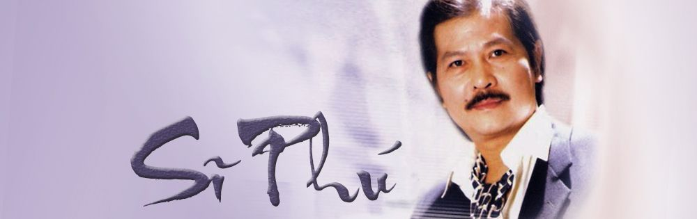

Tiểu Sử

ặc dù mãi đến 4 tuổi mới biết nói, nhưng cậu bé Sĩ Phú đã chứng tỏ với mọi người rằng cậu là một thiên tài về âm nhạc lúc chỉ mới lên 5, 6 tuổi. Cậu ca hát nghêu ngao suốt ngày và hát rất hay.
Sĩ Phú sinh ngày 9 tháng 1 năm 1942, tại Bonneng Thaket, Lào. Năm 1945, anh theo gia đình từ Lào về Hà Nội lúc được 3 tuổi.
Năm 1954, theo chân hàng triệu người Việt yêu chuộng tự do, gia đình anh di cư vào Nam. Gia đình anh cư ngụ tại Sài Gòn cho đến ngày sang Hoa Kỳ vào năm 1975.
Tốt nghiệp Trung Học lúc chưa đầy 16 tuổi. Vào đại Học Khoa Học lúc 16 tuổi. Vừa tròn 18, anh đã là giáo sư đệ Nhất Cấp, dạy Toán và Lý Hoá ở hai trường Trung Học La San Nghĩa Thục và Thăng Long tại Sài Gòn (1960-1961). Gia nhập Không Quân vào năm 1962, anh theo học khóa huấn luyện quân sự tại Nha Trang. Từ năm 1963 cho đến 1965, anh được gửi qua Hoa Kỳ 3 lần để học lái trực thăng chiến đấu và các lớp huấn luyện quân sự khác.
Sau biến cố Mậu Thân, từ phi đoàn, anh được Bộ Tư Lệnh Không Quân gọi về để giao phó một chức vụ mới. Anh được giao phó chức Trưởng Khối Cổ động Tuyên Truyền và Trưởng Ban Tâm Lý Chiến cho Sư đoàn 5. Anh phụ trách các chương trình phát thanh, phát hình của Không Quân trong đó, có chương trình Tuyển Mộ Phi Công cho Không Lực VNCH ở đài Truyền Hình Quân đội. Anh cất tiếng hát bài hùng ca đầu tiên trên đài Truyền Hình Sài Gòn vào năm 1968 trong dịp kỷ niệm ngày thành lập Không Lực VNCH.

Năm 1970, anh được cử sang Hoa Kỳ lần thứ tư để theo học khóa huấn luyện phim ảnh và báo chí. Trong dịp này, nhờ vào tài ăn nói Anh Ngữ lưu loát và trí óc linh động thông minh, sau khi đệ trình một luận án, anh được Bộ Tư Lệnh Không Quân Hoa Kỳ chọn để trao tặng bằng thưởng cao quý nhất chưa từng phát ra cho người ngoại quốc bao giờ. Đó là bằng thưởng "Người Hùng Biện Giỏi Nhất" trong ngành báo chí điện ảnh của Không Lực Hoa Kỳ. Đây là một vinh dự chẳng những riêng cho anh, mà là cho cả Không Lực VNCH thời bấy giờ.
Ngày 30 tháng Tư năm 1975, anh là một trong những người cuối cùng rời Việt Nam trên chuyến máy bay quân sự cuối cùng rời Tân Sơn Nhất. Định cư tại miền Nam California, anh theo học đại Học và tốt nghiệp bằng Kỹ Sư Viễn Thông và theo dòng đời, như bao nhiêu người khác, anh lập gia đình và đi làm việc tại một hãng Mỹ. Năm 1983, rời miền Nam California nắng ấm, anh theo hãng làm việc dọn lên trên thành phố San Jose. Năm 1987 anh cho ra đời CD "Có Tình Nào Không Phai" trước khi lui vào bóng tối để sống một cuộc đời âm thầm, giản dị. Mãi đến năm 1995, vì tình yêu mến thính giả và bạn bè vẫn còn mãi trong anh, Sĩ Phú cho ra đời CD "Tà áo Xanh" và "Trái Tim Hững Hờ" (nhạc ngoại quốc lời Việt).
Cuối năm 1997, anh thực hiện CD "Còn Chút Gì để Nhớ" nhưng bị dở dang... nhưng may mắn thay, anh lại có dịp tiếp tục với công trình này và đã thu âm 10 bản nhạc cho CD này vào cuối năm 1999. Tháng 4 năm 1999, anh bị bệnh nặng và bị khám phá mang bệnh ung thư phổi. Trở về miền Nam California, anh được Ngọc Lan, người bạn tri kỷ cuối đời săn sóc chu đáo trong những ngày cuối cùng của cuộc đời. Ngày 22 tháng 6 năm 2000, Ngọc Lan và Sĩ Phú cho ra mắt CD cuối cùng của Sĩ Phú "Còn Chút Gì để Nhớ". Đêm ra mắt CD được sự ủng hộ rất đông đảo của thính giả yêu thương của anh. Hai mươi bảy ngày sau, tức là ngày 19 tháng 7 năm 2000 anh đã thua cuộc chiến với căn bệnh ung thư hiểm nghèo, vĩnh viễn từ giã cuộc đời. Hưởng dương 58 tuổi.
Anh để lại 3 người con đã trưởng thành, một anh, một chị và Ngọc Lan, người bạn tri kỷ cuối đời mà anh đã giới thiệu với khán thính giả trong đêm ra mắt CD của anh như một "Thiên Thần đã đến ở cuối đời tôi".
Sĩ Phú đã ra đi, nhưng tiếng hát hiếm hoi, quý phái, đầm ấm của người ca sĩ thần tượng đầy nhân bản này và nhân cách cao quý của anh vẫn mãi mãi còn vương lại trong lòng mỗi chúng ta.
còn đâu mùa cũ yên vui,
nhớ thương...
Ơn em thơ dại từ trời,
Theo ta xuống biển vớt đời ta trôi...
Ơn em hồn sớm ngậm ngùi,
Kiếp sau xin giữ lại đời cho nhau.
Thơ Du Tử Lê
I thank you for your pure and heavenly innocence.
Together we went through the ups and downs of life...
Now your soul is melancholy.
Let’s promise to be back together in the next life.
From a poem by Du Tu Le